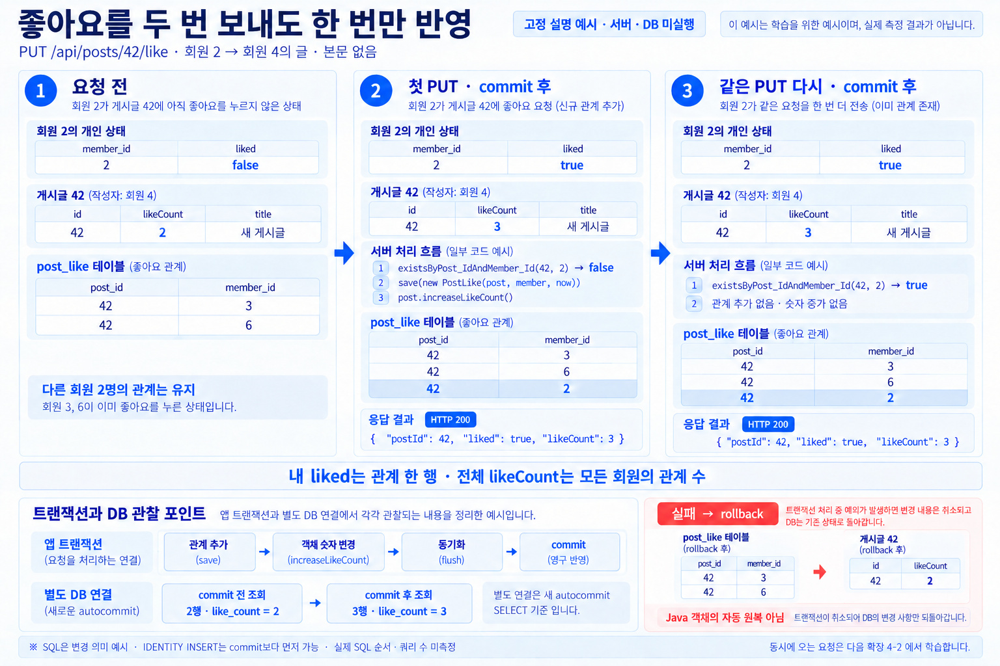

글의 전체 카운트와 실제 관계 수
응답 likeCount, post.like_count, 모든 회원의 관계 수를 비교합니다. 요청 전 값도 별도로 기록합니다.
SELECT p.id, p.author_id, p.like_count,
(SELECT COUNT(*) FROM post_like pl WHERE pl.post_id=p.id) AS relation_count
FROM post p WHERE p.id=:capturedId;학습 프로젝트 안내
제공된 시작 ZIP의 community 프로젝트에서 진행합니다. 45일 과정의 board-server와 요청·응답·DB 구조가 다릅니다.
지금 실행한 실습 프로젝트의 서버 주소를 입력하세요.
| 동작 | 45일 과정 · board | community |
|---|---|---|
| 글 작성 | 201 Created · Location · 본문 없음 | 201 Created · JSON 본문 |
| 좋아요 | 204 No Content · 본문 없음 | 200 OK · liked · likeCount |
확장 1 / 2 · 같은 프로젝트에 기능 추가
수정할 파일 · 메서드LikeService.java#like
응답이 늦어 같은 요청을 다시 보내도 좋아요는 유지되어야 합니다.
시작 버튼으로 학습 기록을 남길 수 있습니다.
관계와 숫자를 같은 트랜잭션으로 바꾸고 liked=true와 현재 숫자를 응답합니다.
LikeService.java#likesrc/main/java/org/example/like/LikeService.java
@Transactional
public LikeResponse like(Long postId, AuthenticatedMember loginMember) {
throw new UnsupportedOperationException("학습용 미구현: like 메서드를 완성하세요.");
}시작 패키지의 실제 코드 · 이번 메서드 본문만 구현 구현 순서 상세 ↓
좋아요 추가 자료 받기를 별도 폴더에 풀고 README-LEARNING을 확인합니다. 새 파일6개와 Post·예외 handler의 작은 patch만 추가합니다. 기존 PostService·PostQueryService를 교체하지 않습니다. 이미 추가했다면 이번에는 like 본문만 구현합니다.
새 폴더용 좋아요 설정 시작 ZIP은 앞 CRUD 정본을 포함합니다. 기존 학습 코드 위에 풀지 않습니다. 같은 community DB를 유지하고 새 폴더에서 DB를 다시 만들지 않습니다.
./gradlew compileJava
./gradlew bootRun이미 실행 중이면 그 bootRun 터미널에서 Ctrl+C로 앱만 종료한 뒤 다시 실행합니다. DB·포트·기존 데이터는 유지합니다. JDK21·Gradle9.8.0이며 다른 DB 포트를 썼다면 같은 SPRING_DATASOURCE_URL을 사용합니다.
javaExperience 문서 저장소 루트에서 아래 명령을 실행합니다. 이 문서 서버와 별도 실습용 백엔드 앱을 구별합니다.
python3 -m http.server 8765 --bind 127.0.0.1학습 HTTP 주소 열기 · 백엔드 기본 주소는 http://localhost:8080입니다. 토큰은 직접 입력하며 자동 저장하지 않습니다.
같은 프로젝트의 게시글 작성을 새 탭에서 열어 교육용 tok-park로 새 PUBLIC 글을 만들고 실제 id를 기록합니다. 좋아요는 tok-kimjava로 요청합니다. 기존 CRUD의 삭제한 id는 여기 자동 입력하지 않습니다. 취소에서는 좋아요 요청에서 성공한 같은 글 id를 이어 씁니다.

요청 전 상태입니다. 다른 회원 3·6의 좋아요와 내 관계를 구분하세요.
실제 서버 미실행 · 고정 설명값내 관계의 시작 상태 · Post 필드 아님회원2 · 관계 없음
post.like_count 2
| post_id | member_id |
|---|---|
| 42 | 3 |
| 42 | 6 |
작성자는 회원4이며 다른 두 회원의 좋아요가 이미 있는 예시입니다. 실제 새 글에 내 좋아요만 추가하면0→1, 취소하면1→0입니다. 상태 비교는 선택 기능입니다.
아직 요청 전입니다.추가 쓰기 없음SQL은 변경 의미 예시입니다. IDENTITY INSERT는 save 중 먼저 실행될 수 있고, 파생 DELETE도 명시한 SQL 발행 시점이 아닙니다. 정본에 명시적 flush는 없으며 실제 열 목록·순서·쿼리 수는 미측정입니다.
rollback은 DB 변경 취소입니다. Java 객체 필드의 자동 원복을 보장하지 않습니다. 동시성은4-2에서 다룹니다.
Service가 반환할 객체 값입니다. SQL이 어느 지점까지 실행됐는지는 이 시점의 모델에서 고정하지 않습니다. save의 IDENTITY INSERT는 이미 실행됐을 수 있습니다. 아직 성공 HTTP 응답을 보낸 단계가 아닙니다.
실제 서버 미실행 · 고정 설명값마지막 계산의 관계 상태 · Post 필드 아님회원2 · 관계 있음
이 시점의 실제 SQL 진행은 미계측입니다. IDENTITY INSERT는 save 중 실행될 수 있습니다. 다음 동기화 시점과 별도 관찰을 비교하세요.
작성자는 회원4이며 다른 두 회원의 좋아요가 이미 있는 예시입니다. 실제 새 글에 내 좋아요만 추가하면0→1, 취소하면1→0입니다. 상태 비교는 선택 기능입니다.
findLikeablePost(postId, loginMember)
작성자 본인이면 SelfLikeNotAllowedException
existsByPost_IdAndMember_Id(42, 2) → false
save(new PostLike(post, member, now))
post.increaseLikeCount()
new LikeResponse(postId, true, post.getLikeCount())INSERT INTO post_like (post_id, member_id, created_at) VALUES (42, 2, :now)
UPDATE post SET like_count = 3, ... WHERE id = 42SQL은 변경 의미 예시입니다. IDENTITY INSERT는 save 중 먼저 실행될 수 있고, 파생 DELETE도 명시한 SQL 발행 시점이 아닙니다. 정본에 명시적 flush는 없으며 실제 열 목록·순서·쿼리 수는 미측정입니다.
rollback은 DB 변경 취소입니다. Java 객체 필드의 자동 원복을 보장하지 않습니다. 동시성은4-2에서 다룹니다.
남은 변경이 동기화된 시점을 따로 관찰하는 설명입니다. 정본 코드의 명시적 flush 호출이 아닙니다. 앱 Tx 내부 값이 바뀌어도 다른 연결에는 이전 확정 값이 보입니다.
실제 서버 미실행 · 고정 설명값마지막 계산의 관계 상태 · Post 필드 아님회원2 · 관계 있음
post.like_count 3
| post_id | member_id |
|---|---|
| 42 | 3 |
| 42 | 6 |
| 42 | 2 이번 회원 |
작성자는 회원4이며 다른 두 회원의 좋아요가 이미 있는 예시입니다. 실제 새 글에 내 좋아요만 추가하면0→1, 취소하면1→0입니다. 상태 비교는 선택 기능입니다.
findLikeablePost(postId, loginMember)
작성자 본인이면 SelfLikeNotAllowedException
existsByPost_IdAndMember_Id(42, 2) → false
save(new PostLike(post, member, now))
post.increaseLikeCount()
new LikeResponse(postId, true, post.getLikeCount())INSERT INTO post_like (post_id, member_id, created_at) VALUES (42, 2, :now)
UPDATE post SET like_count = 3, ... WHERE id = 42SQL은 변경 의미 예시입니다. IDENTITY INSERT는 save 중 먼저 실행될 수 있고, 파생 DELETE도 명시한 SQL 발행 시점이 아닙니다. 정본에 명시적 flush는 없으며 실제 열 목록·순서·쿼리 수는 미측정입니다.
rollback은 DB 변경 취소입니다. Java 객체 필드의 자동 원복을 보장하지 않습니다. 동시성은4-2에서 다룹니다.
내 관계 한 행과 전체 숫자 증가가 함께 확정됐습니다. 다른 회원의 관계는 유지됩니다.
실제 서버 미실행 · 고정 설명값마지막 계산의 관계 상태 · Post 필드 아님회원2 · 관계 있음
post.like_count 3
| post_id | member_id |
|---|---|
| 42 | 3 |
| 42 | 6 |
| 42 | 2 이번 회원 |
작성자는 회원4이며 다른 두 회원의 좋아요가 이미 있는 예시입니다. 실제 새 글에 내 좋아요만 추가하면0→1, 취소하면1→0입니다. 상태 비교는 선택 기능입니다.
findLikeablePost(postId, loginMember)
작성자 본인이면 SelfLikeNotAllowedException
existsByPost_IdAndMember_Id(42, 2) → false
save(new PostLike(post, member, now))
post.increaseLikeCount()
new LikeResponse(postId, true, post.getLikeCount())INSERT INTO post_like (post_id, member_id, created_at) VALUES (42, 2, :now)
UPDATE post SET like_count = 3, ... WHERE id = 42SQL은 변경 의미 예시입니다. IDENTITY INSERT는 save 중 먼저 실행될 수 있고, 파생 DELETE도 명시한 SQL 발행 시점이 아닙니다. 정본에 명시적 flush는 없으며 실제 열 목록·순서·쿼리 수는 미측정입니다.
rollback은 DB 변경 취소입니다. Java 객체 필드의 자동 원복을 보장하지 않습니다. 동시성은4-2에서 다룹니다.
첫 성공 뒤 같은 요청을 한 번 더 보냈습니다. 상태를 뒤집거나 숫자를 한 번 더 바꾸지 않습니다.
실제 서버 미실행 · 고정 설명값마지막 계산의 관계 상태 · Post 필드 아님회원2 · 관계 있음
post.like_count 3
| post_id | member_id |
|---|---|
| 42 | 3 |
| 42 | 6 |
| 42 | 2 이번 회원 |
작성자는 회원4이며 다른 두 회원의 좋아요가 이미 있는 예시입니다. 실제 새 글에 내 좋아요만 추가하면0→1, 취소하면1→0입니다. 상태 비교는 선택 기능입니다.
findLikeablePost(postId, loginMember)
작성자 본인이면 SelfLikeNotAllowedException
existsByPost_IdAndMember_Id(42, 2) → true
관계와 카운터를 추가 변경하지 않음
new LikeResponse(postId, true, post.getLikeCount())추가 쓰기 없음SQL은 변경 의미 예시입니다. IDENTITY INSERT는 save 중 먼저 실행될 수 있고, 파생 DELETE도 명시한 SQL 발행 시점이 아닙니다. 정본에 명시적 flush는 없으며 실제 열 목록·순서·쿼리 수는 미측정입니다.
rollback은 DB 변경 취소입니다. Java 객체 필드의 자동 원복을 보장하지 않습니다. 동시성은4-2에서 다룹니다.
객체 변경 뒤 남은 SQL을 동기화하다 RuntimeException이 발생하는 별도 실패 분기입니다. 앞선 저장 호출에서 바로 실패한 경우까지 같은 Java 값을 보장하지 않습니다. DB는 요청 전 상태이며 Java 객체 필드의 자동 원복을 뜻하지 않습니다. 정해지지 않은 실패 HTTP 상태는 표시하지 않습니다.
실제 서버 미실행 · 고정 설명값마지막 계산의 관계 상태 · Post 필드 아님회원2 · 관계 있음
post.like_count 2
| post_id | member_id |
|---|---|
| 42 | 3 |
| 42 | 6 |
작성자는 회원4이며 다른 두 회원의 좋아요가 이미 있는 예시입니다. 실제 새 글에 내 좋아요만 추가하면0→1, 취소하면1→0입니다. 상태 비교는 선택 기능입니다.
findLikeablePost(postId, loginMember)
작성자 본인이면 SelfLikeNotAllowedException
existsByPost_IdAndMember_Id(42, 2) → false
save(new PostLike(post, member, now))
post.increaseLikeCount()
new LikeResponse(postId, true, post.getLikeCount())INSERT INTO post_like (post_id, member_id, created_at) VALUES (42, 2, :now)
UPDATE post SET like_count = 3, ... WHERE id = 42SQL은 변경 의미 예시입니다. IDENTITY INSERT는 save 중 먼저 실행될 수 있고, 파생 DELETE도 명시한 SQL 발행 시점이 아닙니다. 정본에 명시적 flush는 없으며 실제 열 목록·순서·쿼리 수는 미측정입니다.
rollback은 DB 변경 취소입니다. Java 객체 필드의 자동 원복을 보장하지 않습니다. 동시성은4-2에서 다룹니다.
앞 CRUD에서 삭제한 id는 사용하지 않습니다. 같은 서버에서 다른 회원(tok-park)의 새 PUBLIC 글을 POST한 실제 id를 직접 입력하세요. 본문은 보내지 않습니다.
코드 수정 후에는 앱만 재시작한 뒤 요청하세요. DB와 작성 응답 id는 유지합니다.
미실행
아직 요청하지 않았습니다. 기대 결과는 실행 결과가 아닙니다.
연속 학습 id: 아직 없음
기본 성공 요청의 기준입니다. 본문·토큰·페이지를 바꿨다면 보낸 값과 비교하세요. 실패 요청의 상태는 아래 실패 조건을 따릅니다.
HTTP 200
이 폼의 id는 양의 정수만 허용합니다. 숫자가 아닌 경로의 400을 확인하려면 정상 id로 curl을 복사한 뒤, API 클라이언트에서 경로의 id만 abc로 바꿔 별도로 실행하세요. 복사만으로 요청하지 않습니다.
별도 DB 클라이언트에서 새 autocommit SELECT로 관찰합니다. 열린 REPEATABLE READ 트랜잭션은 이전 스냅샷을 볼 수 있습니다.
응답 likeCount, post.like_count, 모든 회원의 관계 수를 비교합니다. 요청 전 값도 별도로 기록합니다.
SELECT p.id, p.author_id, p.like_count,
(SELECT COUNT(*) FROM post_like pl WHERE pl.post_id=p.id) AS relation_count
FROM post p WHERE p.id=:capturedId;:memberId는 실제 토큰 회원 id입니다. 내 관계 수와 타회원의 기존 id·created_at을 비교합니다. 응답의 postId를 고정 예시42로 바꾸지 않습니다.
SELECT id, post_id, member_id, created_at
FROM post_like WHERE post_id=:capturedId ORDER BY member_id;
SELECT COUNT(*) AS my_relation_count FROM post_like
WHERE post_id=:capturedId AND member_id=:memberId;:capturedId는 위 글 id, :memberId는 실제 인증 회원 id로 바꿉니다. 위 SQL은 검산용 예시이며 실제 Hibernate 로그가 아닙니다. 이 화면은 DB 쿼리를 실행하거나 저장을 자동 판정하지 않습니다.
함께 비교할 유지 값 post.id, author_id, title, content, view_count, updated_at, deleted_at, 다른 회원의 post_like
직접 확인한 항목만 체크하세요. 자동 채점이나 SQL 실행 결과가 아닙니다.
0 / 4개 자기확인
자료는 새 탭에서 열립니다. 원래 작업 탭의 입력과 선택은 유지됩니다.
4-1의 파일별 blob과 별도 완성 패키지입니다. 직접 구현한 뒤 비교하세요.
@Transactional
public LikeResponse like(Long postId, AuthenticatedMember loginMember) {
Post post = findLikeablePost(postId, loginMember);
if (post.getAuthor().getId().equals(loginMember.id())) {
throw new SelfLikeNotAllowedException();
}
if (!postLikeRepository.existsByPost_IdAndMember_Id(postId, loginMember.id())) {
Member member = memberRepository.getReferenceById(loginMember.id());
postLikeRepository.save(new PostLike(post, member, LocalDateTime.now()));
post.increaseLikeCount();
}
return new LikeResponse(postId, true, post.getLikeCount());
}